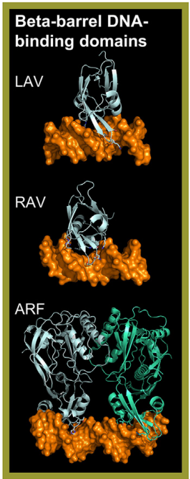

Transcription factors (TFs) in this superclass bind DNA through a beta-barrel structure composed of a variable number of beta-strands. In mammals,
this superclass is represented by a single family: the Dbp family of the Cold-shock domain factors class. While distant homologs of this family in Arabidopsis—such
as CSP1 and CSP3—bind RNA and function as chaperones, they currently have no known DNA-binding activities.
